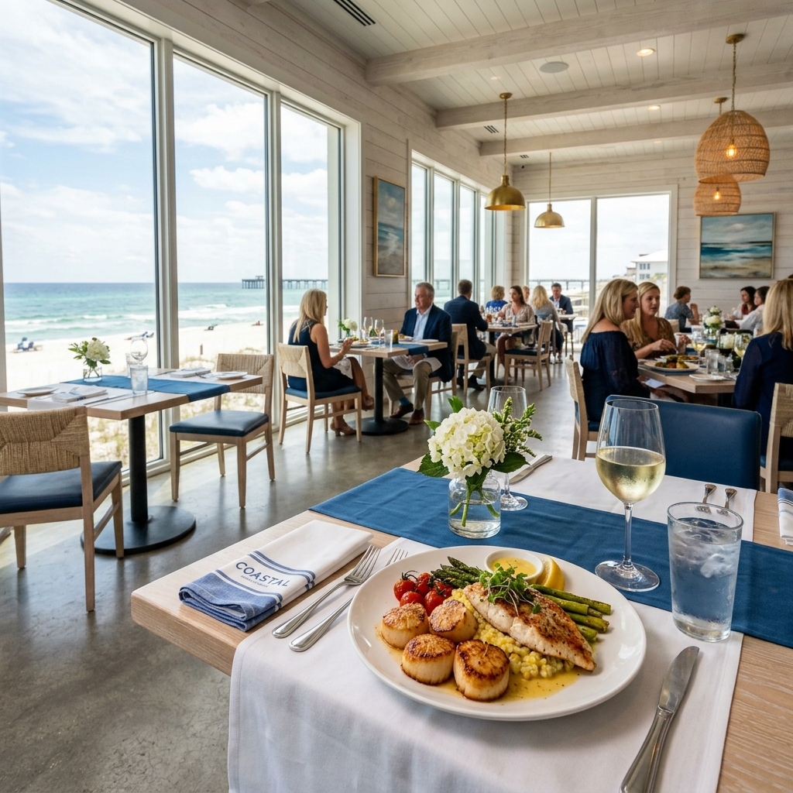

Local Favorites
The restaurants that keep people coming back — not the ones with the biggest billboards.

The Original Oyster House
SEAFOODGulf Shores · $$
A Gulf Shores institution since 1983. Award-winning chargrilled oysters, fresh catch, and waterfront dining on the bay. Casual, family-friendly, and consistently great.

Big Fish Restaurant & Bar
FINE DININGOrange Beach · $$$
Elegant yet relaxed with fresh seafood, sushi, and steaks. Perfect for a special night out or date night on the coast. One of the best dining experiences in the area.

The Gulf
WATERFRONTOrange Beach · $$
Built from stacked blue shipping containers right on the waterline. Lounge chairs in the sand, fresh coastal food, craft cocktails. The most Instagram-worthy dining spot on the coast.

DeSoto's Seafood Kitchen
SEAFOODGulf Shores · $$
One of the most beloved restaurants in Gulf Shores. Family-owned, serving fresh seafood, chicken, pasta, steaks, and incredible home-style sides. Always packed — for good reason.

LuLu's at Homeport Marina
FAMILYGulf Shores · $$
Lucy Buffett's iconic spot on the Intracoastal Waterway. Way more than a restaurant — ropes course, sandy play area, arcade, live music, and a massive gift shop. A destination, not just dinner.

Fish River Grill
CAJUNGulf Shores · $
The original seafood spot of Baldwin County. Famous for Cajun gator bites, burgers, and swamp soup. No frills, just incredible food at great prices. A true local gem.

Beach House Kitchen & Cocktails
SEAFOODOrange Beach · $$
Fresh produce and seafood with creative cocktails. A local favorite for a bite after a day on the beach. Laid-back vibe with consistently excellent food and drinks.

Cosmo's Restaurant & Bar
UPSCALEOrange Beach · $$$
Tucked off the beaten path on Canal Road. A hidden gem with exceptional food, great wine list, and an atmosphere that feels like a well-kept secret among locals.

City Donut
BREAKFASTOrange Beach · $
Voted #1 donut shop in the US by USA Today readers in 2024. Fresh donuts daily — get there early because they sell out. Orange Beach's best-kept morning secret.

Foam Coffee
COFFEEGulf Shores · $$
Modern, minimalist vibes with incredible craft coffee and avocado toast. The perfect spot to work for an hour or grab a latte before heading to the beach.

The Southern Grind
COFFEE & GIFTSThe Wharf & Hotel Indigo · $$
Half coffee shop, half boutique gift store. Great breakfast, lunch, and gelato in a beautiful coastal setting. A must-visit at The Wharf.

Woodside at Gulf State Park
CASUALGulf State Park · $$
Great food, live music, and backyard games right in the heart of the park. Accessible by bike trails or car. Perfect casual spot for the whole family.